Ankunft und Barra da Tijuca: Abflug, Nachtflug, Ankunft am Abend – und direkt zur Churrascaria. Am ersten Morgen dann Barra da Tijuca: gut 18 km Strand im Westen Rios, draußen im Meer die Ilhas Tijucas. Überall hängen Plakate des G20-Gipfels, der wenige Tage später, am 18. und 19. November 2024, in Rio stattfindet.
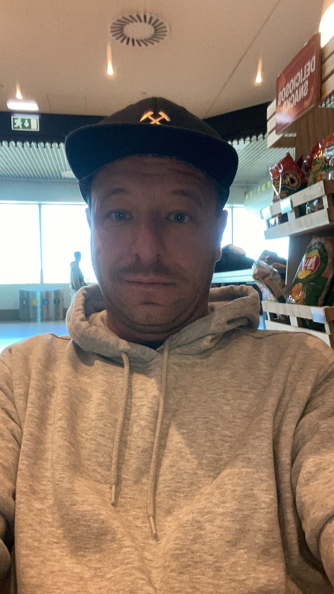
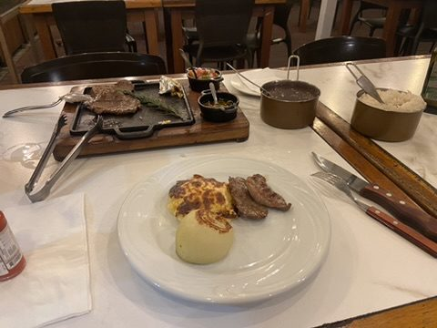
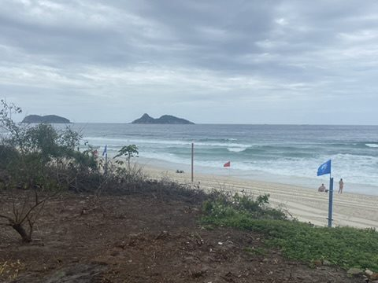
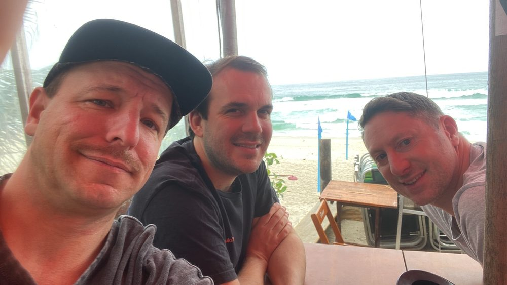
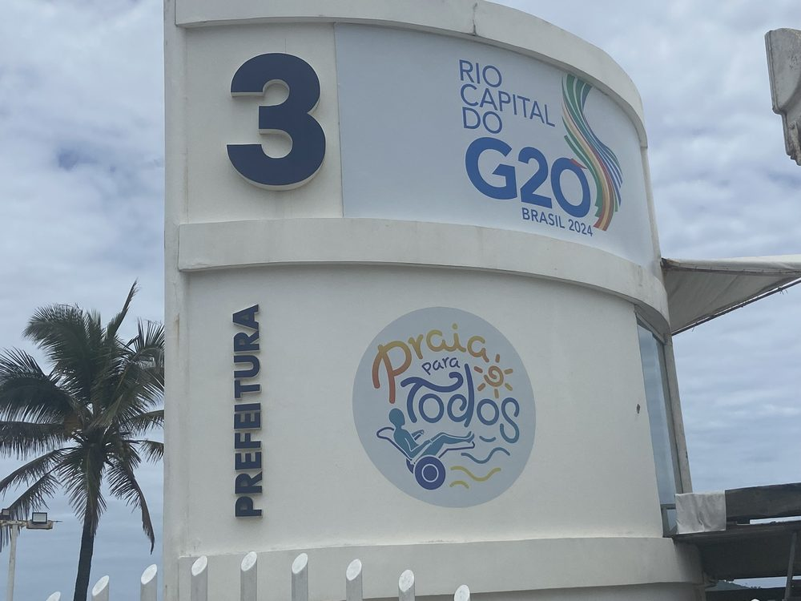
Rio war 2024 Gastgeber des G20-Gipfels – selbst die Strandposten tragen das Logo.
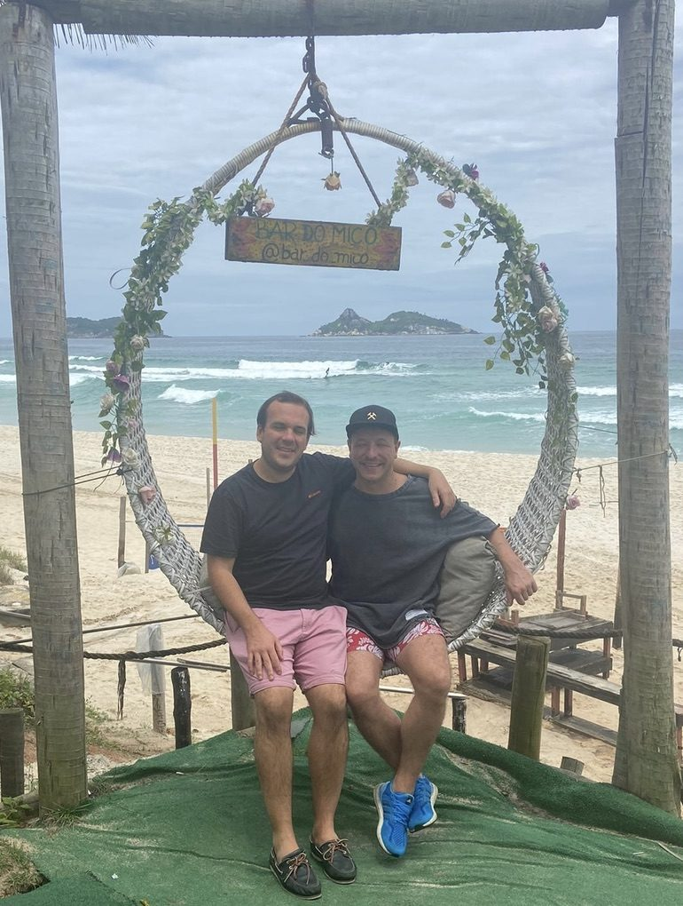
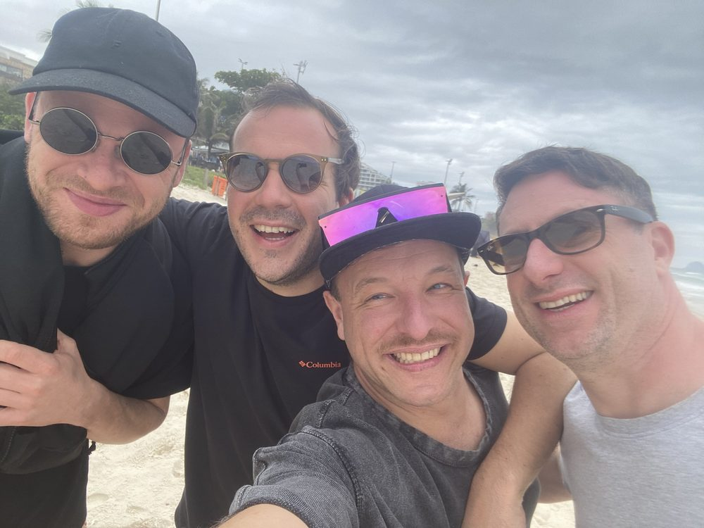
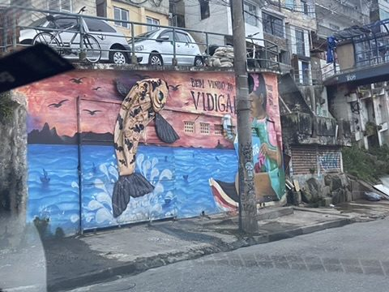
Ipanema und Copacabana: Auf dem Rückweg entlang Leblon und Ipanema: das Mosaikpflaster der Promenade, dahinter der Doppelgipfel Dois Irmãos. Abends an der Copacabana – Bier, Sandskulpturen, das volle Programm.
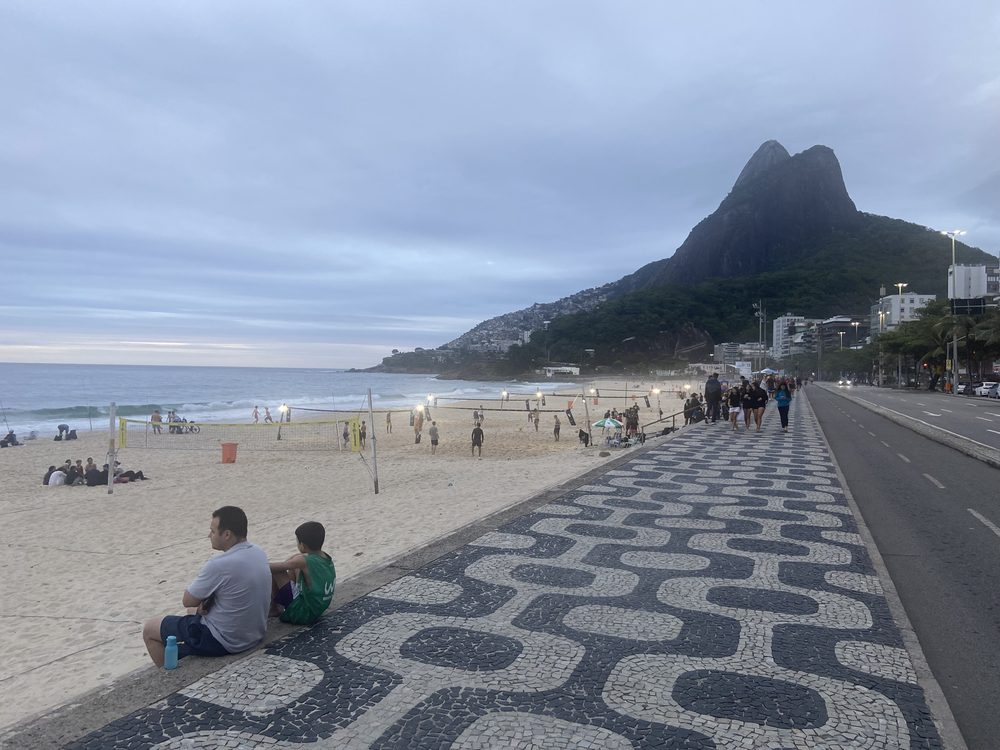
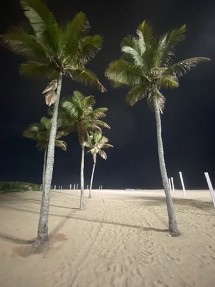
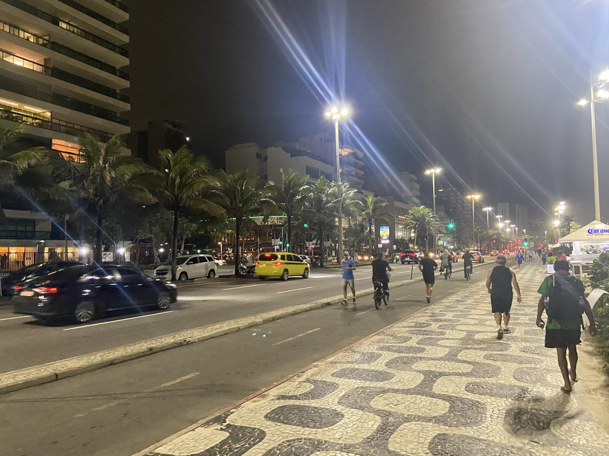
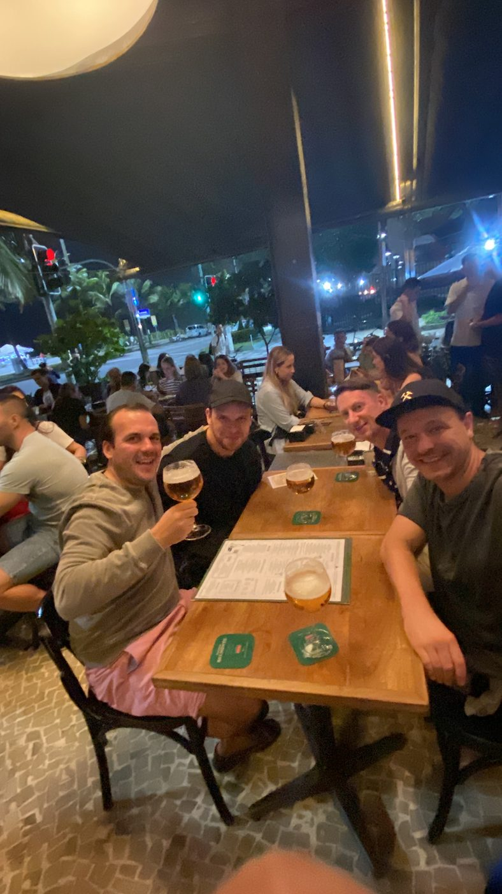
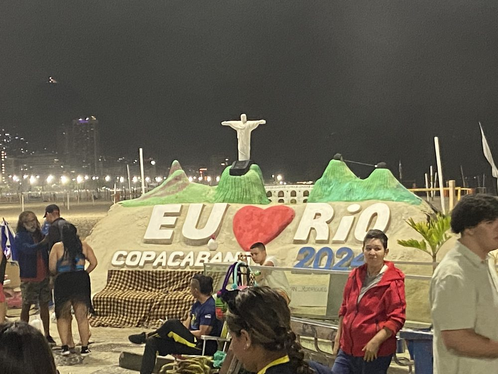
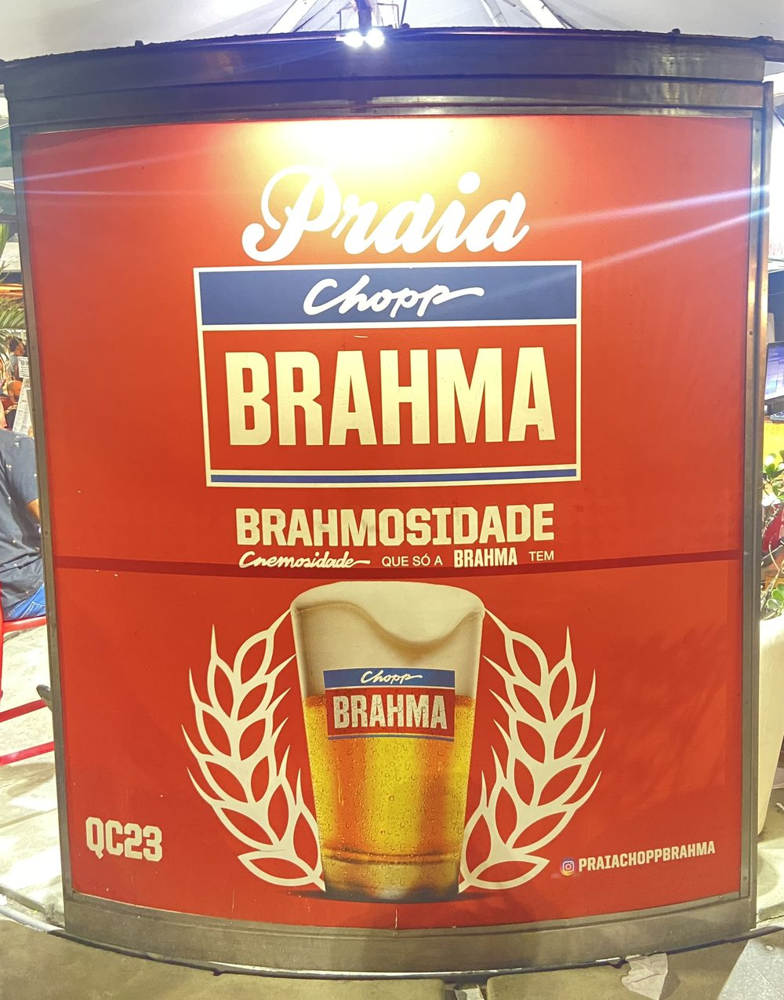
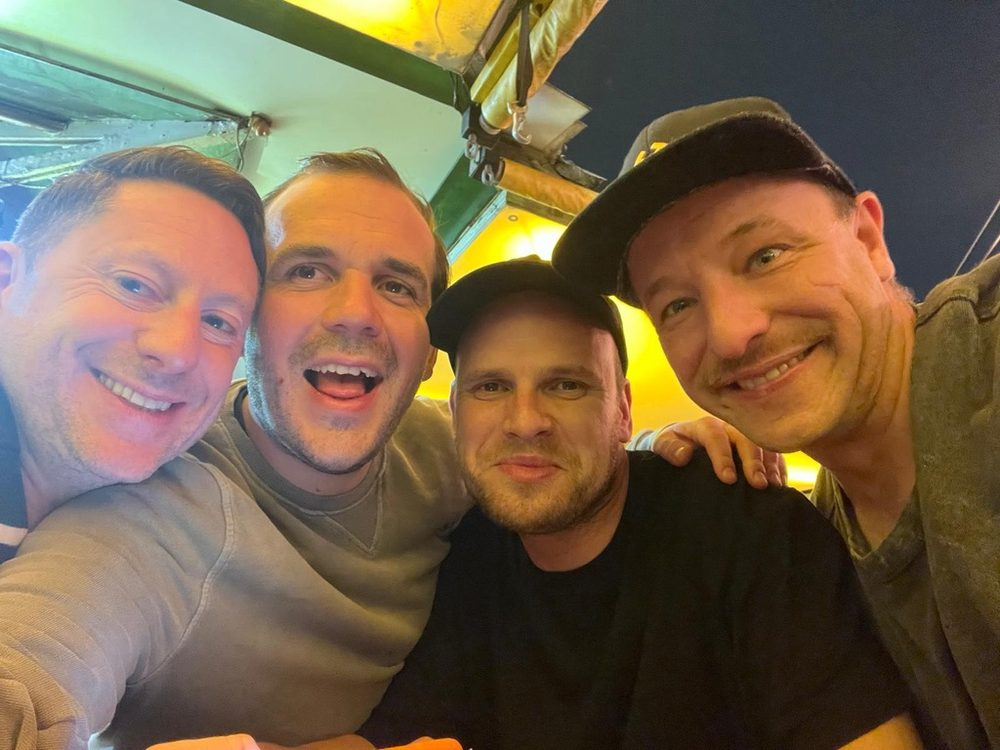